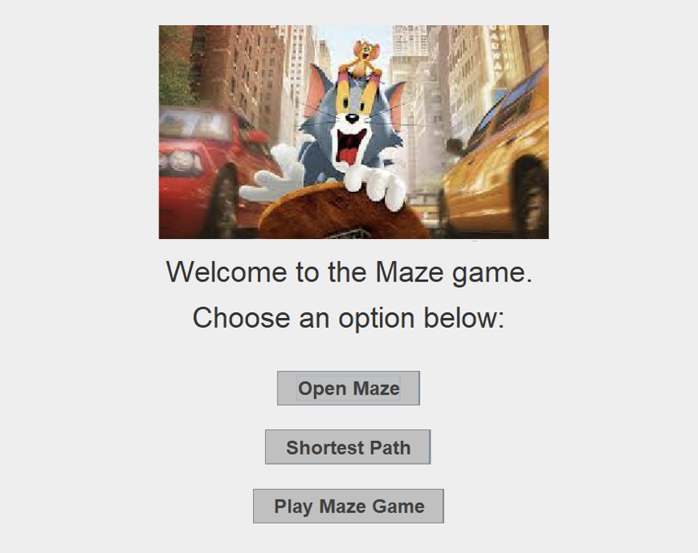

"Tom and Jerry" is an iconic American cartoon film that chronicles the endless pursuit of a hapless cat, Tom, after a clever and spunky mouse named Jerry. Bringing the excitement of this classic chase to life, this fun project is inspired by the timeless rivalry between Jerry and Tom.
Here's how the game works:
Are you ready to embark on this thrilling adventure and outwit Tom in a race against time? Let the maze games begin!
Upon launching the game, the main menu consists of name tags, a picture of Tom and Jerry, and buttons to access different functionalities.
Main Menu
Maze Editor
The maze editor allows users to customize the maze grid, set entry and exit points, and perform actions like generating a new maze, saving, and finding a path.
Shortest Path
This feature highlights the shortest path in the maze and provides a visual representation of the solution.
Maze Game
In the maze game, players control Jerry and navigate through the maze using the arrow keys or WASD keys. The objective is to reach the exit while evading Tom's pursuit.
Link to the project's GitHub repository.
Experience the Tom and Jerry Maze Game in action through our live demonstration:
Embarking on this project has been an incredibly rewarding journey, blending nostalgia with the excitement of gaming. As we delved into the world of Tom and Jerry, we found ourselves immersed in the challenges and adventures of Jerry's escape from Tom's relentless pursuit.
Throughout the development process, we not only built a fun and engaging game but also honed our skills as developers and collaborators. Planning the game involved meticulous detail, from designing the maze structures to implementing the Breadth-First Search algorithm for Tom's pursuit.
Working as a group, we utilized tools like Gantt charts and Burndown charts to stay organized and meet our project milestones. Group meetings became opportunities to brainstorm ideas, troubleshoot challenges, and celebrate our progress. Additionally, leveraging GitHub as our version control system allowed us to collaborate seamlessly and learn valuable lessons in version control and collaboration.
Overall, this project has been a testament to the power of teamwork, creativity, and a shared passion for gaming. It has not only provided us with practical coding experience but also allowed us to relive cherished memories from our favorite childhood cartoon. As we bid farewell to our Tom and Jerry Maze Game, we carry with us a sense of accomplishment and the knowledge gained from this enriching experience.
Lee Tsz Kin, Chan Chun Yuen, Lam Hui Yin